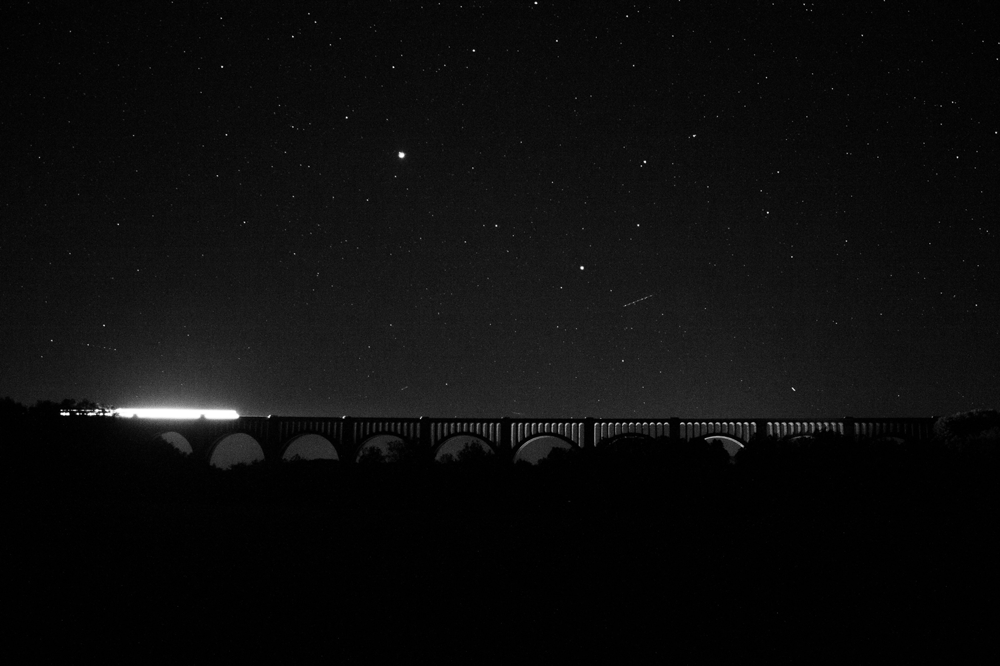

Alex Tomlinson
Some pictures from this summer so far.
Still figuring out what to keep, what to toss, and what to work on more.
- Might try this a third time. Would like to see more stars.
- Once I was by the tracks right next to this siren when it went off, not really a story but it was really loud.
- The ground was very wet!
- Long exposure of the train passing over the bridge. Very delicate balance of trying to have the train move enough, trying to keep the stars still, and trying to keep out noise. Will definitely try more of these.
In case I removed something that you'd like to see again
About
I'm a 20 year old artist attending The Cooper Union.